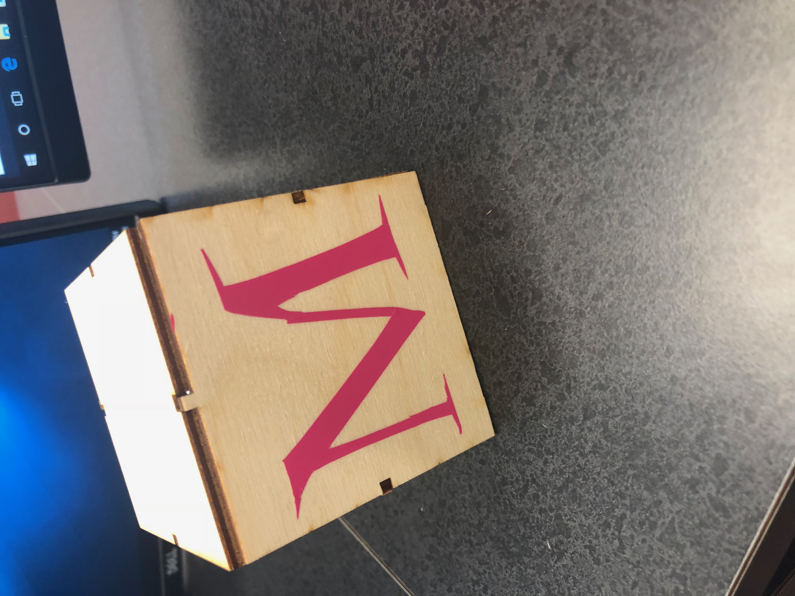
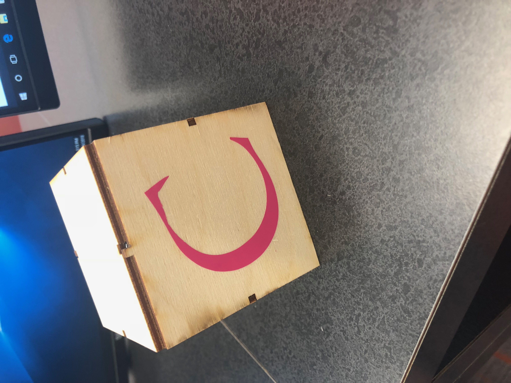

Final Project: How to Make a Ring Stand


1. For my final project, I decided to make a stand for jewelry. After contemplating different designs to hold the jewelry, I chose to 3D print my hand. Each finger would be able to hold a ring or whatever needed to be hung up.
2. For the 3D model, I used a scanner to download an STL file onto my computer that would be of my hand. The scan cam out enough for me to be able to fix it in MeshMixer and smoothen it out. FInally, I dragged the final file onto Makerbot and 3D printed it. I also used the Laser Cutter to cut out a wooden box that the hand could stand on. I used Corel Draw to format the box so that it had notches to hold it together. I also hot glued the box together. To decorate the box, I printed out stickers of my initials from the Roland sticker printer. I used Corel Draw to type the letters and put them on my box!
3. I have spent the past few classes working on my proejct to print it out. It took me two classes to figure out what exactly I wanted to do. I was able to print the box during one class and my hand and the stickers the next class. I assembled everything together after everything was printed out.
4. For the 3D printer, I used Markerbot like always and formatted it to print in terms of milimeters. For the Roland printer, I had to convert the letters into a bitmap logo so that they would be printed as the outline of the letter. To print the box, I had to format the laser cutter to cut through 1/8 inch wood. It also had to make sure that all my files on Corel Draw had the design as hairline size so that the it would cut through the wood, not scetched on.
5. Working on this project has taught me how to independently design and make my own project. I liked how I could freely decided what I would work on for the rest of the year. It also refreshed my mind on how all the different printers work and the various apps that needed to be used for each design.